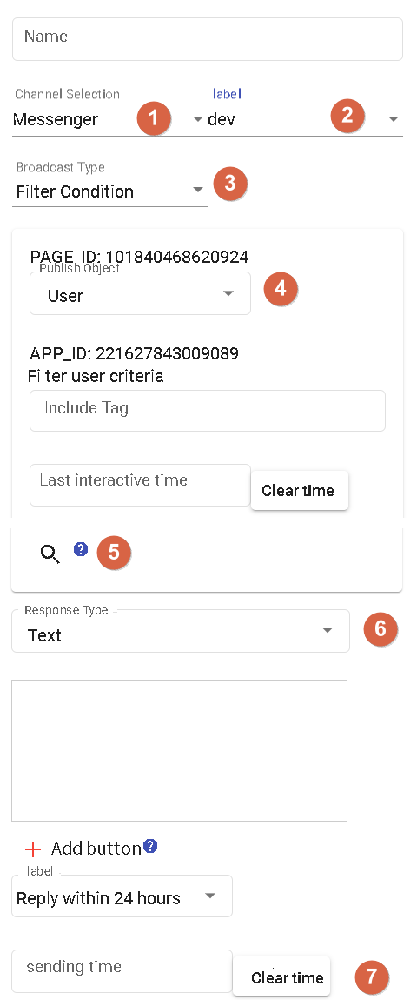

Broadcasting
Broadcasting is used to send bulk messages to a group of users. It can be widely used for marketing, promotional activities, update notifications, and more. Here are some features and use cases of the broadcasting functionality:
Bulk Message Sending: Broadcasting allows you to send messages to multiple users at once, saving time and effort. You can choose specific user groups or the entire user base for broadcasting.
Increased Coverage: With the broadcasting functionality, you can deliver messages to a large number of users, increasing the message's coverage and visibility. This helps in promoting events, launching new products, or conveying important announcements.
Remarketing and Promotion: Broadcasting is a powerful tool for remarketing, where you can send relevant offers, promotions, or important messages to users who have shown interest in the past. This helps improve user conversion rates and engagement.
Important Notifications and Updates: Broadcasting can also be used to send important notifications and updates, such as system changes, service interruption notices, or policy updates. This ensures that users stay informed about the latest information and provide necessary guidance.
Personalized Broadcasting: Some bot platforms offer personalized broadcasting features, where customized messages can be sent to different user groups based on their tags, providing a more personalized experience.
Introduction

- Channels currently supported: LINE, Messenger, Telegram.
- Branches: Dev (development version) and Prod (production version).
- Dev is for testing purposes.
- Filtering Options:
- Filter Conditions: Users can be filtered based on tags and last interaction time to determine the recipients of the broadcast.
- Self-registration: By using resource nodes to interact with DmFlow's API, users can register events themselves.
- Recipients: Users and groups. - Groups: Only available for LINE and Telegram, broadcasts will be sent to the selected groups.
- Display the number of users matching the filtering or registration criteria.
- Response Types: Support for text and images, with the option to add buttons for selectable options.
- Sending Time: Broadcasts can be scheduled to be sent at a specified time.